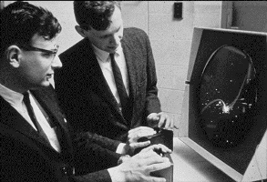
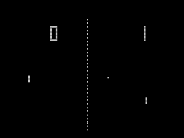
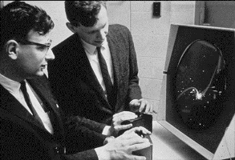
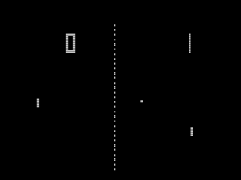

A Game Boy az egyik első, sikeres, nagy példányszámban eladott játékkonzol. A japán Nintendo cég által tervezett és gyártott 8-bites kézi játékkonzol egyik nagy előnye a cserélhető játékkártya volt. Japánban és Észak-Amerikában 1989-ben, Európában pedig 1990-ben került forgalomba. Ez volt a rendkívül sikeres Game Boy játékkonzol-sorozat indító modellje, megalkotója Jokoi Gunpej, aki a Nintendo fejlesztési csoportjának vezetője volt. Annak ellenére, hogy a konzol élettartama alatt sorra jelentek meg a technikailag sokkal fejlettebb más játékkonzolok, a Game Boy óriási sikert aratott. A Game Boy és Game Boy Color modellekből együttvéve közel 120 millió darabot adtak el a világon. Az Egyesült Államokban való megjelenésekor az egész első szállítmány, 1 millió darab, hetek alatt elfogyott. A gép csatlakoztatható további Game Boy konzolokkal is összekötő kábel segítségével. Az összekötött gépeken eleinte két játékos játszhatott egymás mellett ugyanazzal a játékkal, ilyen volt például a Tetris; később megjelentek a több konzol összekötését lehetővé tevő játékok és kábelek is. Legfeljebb 4 gépet lehet ilyen módon összekapcsolni. Ezt a kapcsolatot több játék komolyabban is kihasználja, például a Pokémon játékokban a játékosok ezen keresztül cserélhetnek Pokémonokat, és kommunikálhatnak egymás között.
A konzol 3 régióban más időben került forgalomba, a kezdeti játékkínálat is különböző volt: